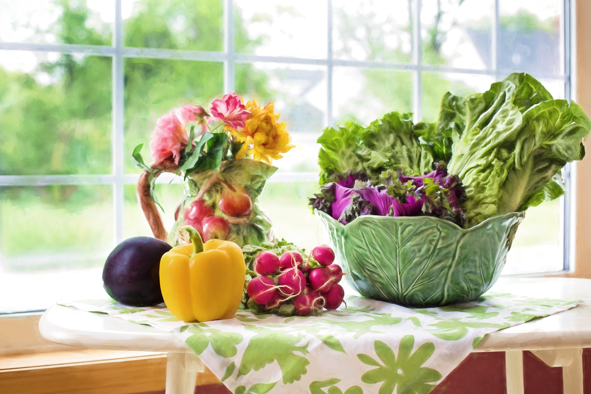

Farmer's Market
Explore a variety of fresh and locally grown fruits and vegetables at our Farmer's Market. Meet local farmers and learn about sustainable farming practices.
Meet Alexandria, the Appaloosa Horse
Come and meet Alexandria, our friendly Appaloosa horse. Learn about horse care, grooming, and enjoy a hands-on experience.
Vegetable Growing Competition
Join our Vegetable Growing Competition and showcase your gardening skills. Learn tips and tricks for growing your own vegetables and win prizes.
Science Museum
Explore the science behind fruits and vegetables in our Small Science Gallery. Interactive exhibits and displays will engage visitors of all ages.

